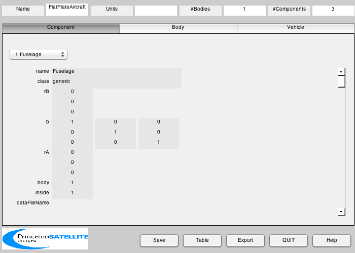

Create a flat plate vehicle with two flaps
------------------------------------------------------------------------
See also BuildCADModel, CreateBody, CreateComponent, PlateTwoSided,
SaveStructure.
------------------------------------------------------------------------
BuildCADModel( 'initialize' );
m = CreateBody( 'make', 'name', 'Core' );
BuildCADModel('add body', m );
BuildCADModel( 'set name' , 'FlatPlateAircraft' );
BuildCADModel( 'compute paths' );
b = 12.8*2;
x = [27.66 1 1 0 0 1 1];
y = [0 b/2 1 1 -1 -1 -b/2];
zT = 0.1;
zB = -0.1;
vW = [x' y' zT*ones(7,1);x' y' zB*ones(7,1)];
fW = [ 1 3 2;...
1 6 3;...
1 7 6;...
6 4 3;...
6 5 4];
vWN = vW;
vWN(:,2) = -vWN(:,2);
f = [fW;fliplr(fW)+size(vW,1)];
v = [vW;vWN];
lF = 1;
wF = 11.8;
m = CreateComponent( 'make', 'generic','name', 'Fuselage', 'body', 1,...
'rA',[0;0;0],'b',eye(3),...
'vertex', v,'face', f,'faceColor', 'aluminum' );
BuildCADModel('add component', m );
[v, f] = PlateTwoSided( [0 lF lF 0], [0 0 wF wF], 0 );
x = 0;
y = 1;
m = CreateComponent( 'make', 'generic','name', 'Flap1', 'body', 1,...
'rA',[x;y;zT],'b',eye(3),...
'vertex', v,'face', f,'faceColor', 'steel' );
BuildCADModel('add component', m );
m = CreateComponent( 'make', 'generic','name', 'Flap2', 'body', 1,...
'rA',[x;-y-wF;zT],'b',eye(3),...
'vertex', v,'face', f,'faceColor', 'steel' );
BuildCADModel('add component', m );
d.cadModel = BuildCADModel('get model');
ax = [0 0 0;...
1 1 1;...
0 0 0];
r = [5 0.5 0.5;...
0 1.5 -1.5;...
0 0 0];
s = zeros(3,1);
c = [0;0;0];
for k = 1:3
s(k) = sum(d.cadModel.component(k).a)/2;
c = c + r(:,k)*s(k);
end
d.rCM = c/sum(s);
k = 1;
x = [1;0;0];
aR = b^2/sum(s);
aRA = wF^2/s(2);
t = 0.01;
d.surface(k) = struct('name', 'Wing', 'length', 1,'alpha0',0,'zeroAxis',x,...
'oswaldEff', 0.99, 'aspectRatio', aR, 'thickness', t, 's', s(1), ...
'r', r(:,1),'axis',ax(:,k), 'cP', 0.002); k = k + 1;
d.surface(k) = struct('name', 'Left aileron', 'length', 1,'alpha0',0,'zeroAxis',x,...
'oswaldEff', 0.99, 'aspectRatio', aRA, 'thickness', t, 's', s(2), ...
'r', r(:,2),'axis',ax(:,k), 'cP', 0); k = k + 1;
d.surface(k) = struct('name', 'Right aileron', 'length', 1,'alpha0',0,'zeroAxis',x,...
'oswaldEff', 0.99, 'aspectRatio', aRA, 'thickness', t, 's', s(3), ...
'r', r(:,3),'axis',ax(:,k), 'cP', 0);
SaveStructure(d,'FlatPlateAircraft');
